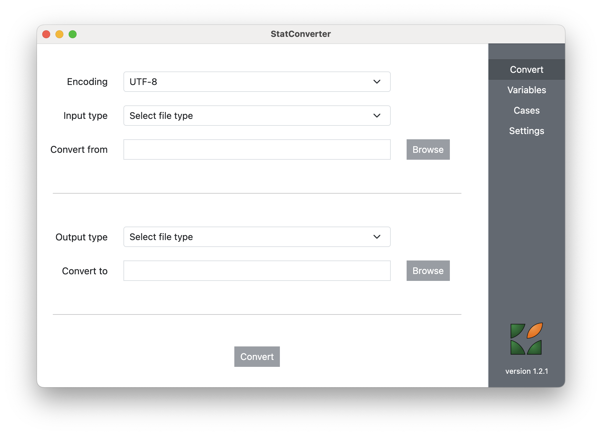

StatConverter
StatConverter v1.0.1 (by RODA) is a tool to convert to and from various statistical software formats: R, SPSS, Stata, SAS (even Excel) and DDI Codebook.

The actual conversion is done using the R environment. StatConverter is a graphical user interface using Node.js and Electron, to build cross-platform desktop applications using HTML, CSS, and JavaScript. It is available in multiple formats, depending on the operating system: apart from the GitHub source files, platform specific binaries and installers are also available.
Everything packed in
On Windows (64 bit), the is no need to separately install R. It can be made portable and packed into the converter:
-
install as a self-contained application: Download .exe
-
executable application, no need to install Download .zip
Separate installation of R
Since it is not possible to make R portable on MacOS and Linux, on these platforms StatConverter requires a separate installation of R (see the CRAN download page), in a similar way to RStudio. Further instructions about the necessary R packages are presented below. When R is successfully installed on the local computer, StatConverter can directly communicate with it on all operating systems (including Windows):
-
install as an application (installers to be added)
-
executable binaries, no need to install (compressed files to be added)
Necessary R packages
StatConverter uses a couple of R packages that need to be installed:
install.packages(c("DDIwR", "jsonlite"), dependencies = TRUE)It is important to have these packages with all their dependencies, otherwise functionality might be lost.
The actual package that does the heavy lifting is DDIwR (DDI with R), which uses the package haven which in turn uses Evan Miller’s ReadStat C library.
R on the system PATH
On Unix systems (including MacOS), R is automatically added to the system PATH upon installation. On Windows, this has to be done manually:
-
search for “Edit the system environment variabled” in Control Panel
-
click the “Advanced” tab
-
click on the “Environment Variables…” button
-
double-click on the “Path” variable to open it
-
click on “New”, then “Browse” and indicate the folder where R is installed, typically in C:/Program Files/R/R-4.2.0/bin (the actual version number depends on the moment when R is installed)
Running StatConverter from sources
For the advanced users (Linux, usually) StatConverter can also be started from its source files.
The first step is to create a clone of the GitHub repository.
Node.js needs to be installed, we recommend version 14 which we are using.
On Windows, users need to install the Microsoft Visual Studio Tools (we’ve installed the 2019 community version, especially the C++ build tools) and also Git, which needs to be on the system PATH as well.
Then open a Terminal in the clone of the StatConverter directory, and type:
npm installAfter Node.js will install all the necessary modules, type:
npm startto start the application.